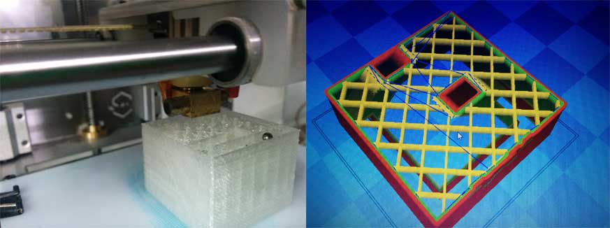
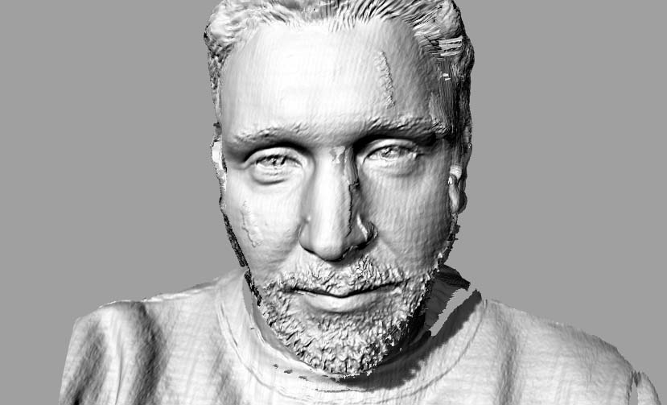

25.02.2015
Thinking about an object impossible to make with subtractive method I draw a simple cube but with a canal system inside. While printing I inserted two balls inside the canals and the result is that you can see in the short video below

Video
Cube with balls inside
Obviously the project file is opensource and you can download for free.
The first test was made with Microsoft Kinect sensor and Skanect software, but the software wan't to connect with the sensor. I tried to install the Kinect official SDK but seem to be made for the new type sensor, searching online I discovered some library as OpenNI and Nite, with this driver Skanect seems to work well;
Kinect has a structural light scanning sistem made with a IR projector that show an IR grid and 2 cameras, one rgb for the texture mapping and another one IR to catch the grid.
Skanect isn't free and the model that you can save is about 3000 polygon, at this quality the 3d model is usefull just to have an aidia of the piece!
One mounth ago I worked with a photographer making 3d scan of a models and I tried also to scan myself.
to do this job we used David Laserscanner configured in structured light mode using a projector and a DSLR camera. The process is the same with kinect but with this configuration the resolution of the model is really high!
The only one problem with this method is that the camera can't catch brown or black hair, so I've added the hair with a software after.
Here a video of the process during scanning myself
And the result
